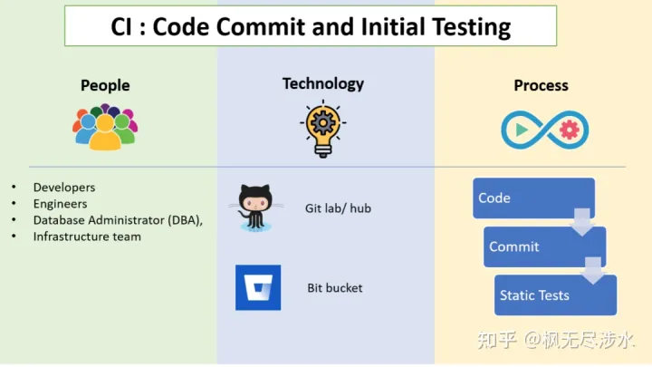

一、CI/CD 的概述
CI/CD 是一种通过在应用开发阶段引入自动化来频繁向客户交付应用的方法。
CI/CD 的核心概念是持续集成、持续交付和持续部署。它是作为一个面向开发和运营团队的解决方案，主要针对在集成新代码时所引发的问题（也称为：“集成地狱”）。
CI/CD 可让持续自动化和持续监控贯穿于应用的整个生命周期（从集成和测试阶段，到交付和部署）。
这些关联的事务通常被统称为 CI/CD 管道，由开发和运维团队以敏捷方式协同支持。
二、CI 持续集成（Continuous Integration）
持续集成（CI）是构建软件和完成初始测试的过程。持续部署（CD）是将代码与基础设施相结合的过程，确保完成所有测试并遵循策略，然后将代码部署到预期环境中。当然，许多公司也有自己特有流程，但主要步骤如下。
1.CI：代码提交阶段

参与者：开发工程师，数据库管理员（DBA），基础架构团队
技术：GitHub，GitLab，SVM，BitBucket
流程：代码提交阶段也称为版本控制。提交是将开发人员编写的最新代码变更发送到代码存储库的操作。开发人员编写的代码的每个版本都被无限期地存储。在与合作者讨论和审查变更之后，开发人员将编写代码，并在软件需求、特性增强、bug修复或变更请求完成后提交。管理编辑和提交变更的存储库称为源代码管理工具（配置管理工具）。在开发人员提交代码（代码推送请求）后，代码更改被合并到主线代码分支中，这些主线代码分支存储在GitHub这样的中央存储库中。
2.CI：静态代码检查阶段
参与者：开发工程师，数据库管理员（DBA），基础架构团队
技术：GitHub，GitLab，SVM，BitBucket
流程：开发人员编写代码并将其推送到存储库后，系统将自动触发以启动下一个代码分析过程。开发过程中存在这种情况：提交的代码可以构建成功，但在部署期间构建失败。无论从机器还是人力资源的利用率而言，这都是一个缓慢而昂贵的过程。因此必须检查代码中的静态策略。SAST（静态应用程序安全性测试）：SAST是一种白盒测试方法，可以使用SonarQube，Veracode，Appscan等SAST工具从内部检查代码，以发现软件缺陷，漏洞和弱点（例如SQL注入等）。这是一个快速检查过程，其中检查代码是否存在语法错误。尽管此阶段缺少检查运行时错误的功能，但该功能将在以后的阶段中执行。
将额外的策略检查加入自动化流水线中可以显著减少流程中稍后发现的错误数量。
3.CI：构建
参与者：开发工程师
技术：Jenkins，Bamboo CI，Circle CI，Travis CI，Maven，Azure DevOps
流程：持续集成过程的目标是提交的代码持续构建为二进制文件或构建产物。通过持续集成来检查添加的新模块是否与现有模块兼容，不仅有助于更快地发现bug，还有助于减少验证新代码更改的时间。构建工具可以根据几乎所有编程语言的源代码创建可执行文件或包（.exe，.dll，.jar等）。在构建过程中，还可以生成SQL脚本，配合基础设施配置文件一起进行测试。简而言之，构建阶段就是编译应用程序的阶段。Artifactory存储、构建验证测试和单元测试也可以作为构建过程的一部分。
构建验证测试（BVT）/冒烟测试/单元测试：
创建构建后立即执行冒烟测试。BVT将检查所有模块是否正确集成，以及程序的关键功能是否正常运行。这样做的目的是拒绝严重损坏的应用程序，以使QA团队不会在安装和测试软件应用程序步骤浪费时间。
在完成这些检查后，将向流水线中执行UT（单元测试），以进一步减少生产中的故障。单元测试可验证开发人员编写的单个单元或组件是否按预期执行。
构建产物存储：
一旦构建就绪，程序包就会存储在称为Artifactory或Repository工具的中央数据库。随着每天构建量的增加，跟踪所有构建产物也会变得愈加困难。因此，一旦生成并验证了构建产物，就将其发送到存储库进行存储管理。诸如Jfrog Artifactory之类的存储库工具可用于存储诸如.rar，.war，.exe，Msi等之类的二进制文件。测试人员可以从此处手动进行选择，并在测试环境中部署构建产物以进行测试。
4.CI：测试阶段
参与者：测试人员、QA
技术：Selenium，Appium，Jmeter，SOAP UI，Tarantula
过程：发布构建过程后的一系列自动测试将验证代码的准确性。此阶段可帮助避免生产中的错误。根据构建的大小，此检查可能持续数秒至数小时。对于由多个团队提交和构建代码的大型组织，这些检查在并行环境中运行，以节省宝贵的时间并尽早将错误通知开发人员。
测试人员（或称为QA工程师）基于用户描述的测试用例和场景设置自动化测试用例。他们执行回归分析、压力测试来检查与预期输出的偏差。测试中涉及的活动有完整性测试、集成测试、压力测试。这是一个高层次测试方法。在这个阶段，可以发现开发人员忽视的某些代码问题。
集成测试：
集成测试是使用Cucumber、Selenium等工具执行的，在这些工具中，单个应用程序模块被组合起来并作为一组进行测试，同时评估其是否符合指定的功能需求。在集成测试之后，需要有人批准该组中的更新集应该移到下一个阶段，这通常是性能测试。这个验证过程可能很麻烦，但它是整个过程的一个重要部分。验证这个过程业界有很多优秀的方案。
性能和压力测试：
Selenium、JMeter等自动化测试工具也可执行性能和压力测试，以检查应用程序在面对高负载时是否稳定和性能良好。该测试流程通常不会在每个更新提交上运行，因为完整的压力测试是长期运行的。当发布主要的新功能时，将对多个更新进行分组，并完成完整的性能测试。在单个更新被转移到下一阶段的情况下，流水线可能将金丝雀测试加入作为可选。
三、CD 持续交付（Continuous Delivery）

参与者：站点可靠性工程师（SRE）、运营和维护团队。
技术：JIRA、ServiceNow、Slack、电子邮件、Hipchat。
过程：DevOps团队的目标是更快地持续发布，然后不断减少错误和性能问题。这是通过不时地通过发送电子邮件向开发人员、项目经理提供有关新版本的质量和性能的反馈。通常情况下，反馈系统是整个软件交付过程的一部分。因此，交付中的任何更改都会频繁地录入系统，以便交付团队可以对它采取行动。
四、CD 持续部署（Continuous Deployment）
参与者：基础架构工程师，SRE，运维工程师
技术：Spinnaker，Argo CD，Tekton CD
过程：在测试阶段完成之后，可以部署到服务器的标准代码准备就绪。在部署到生产中之前，它们将被部署到产品团队内部使用的测试环境或beta环境。在将构建移至这些环境之前，构建必须经过Bake和Deploy的子阶段。这两个阶段都是Spinnaker所支持存在的。
1.CD：Bake
Baking是指在生产时使用当前配置从源代码创建不可变的镜像实例。这些配置可能是数据库更改和其他基础结构更新之类的事情。Spinnaker可以触发Jenkins执行此任务，并且某些组织更喜欢使用Packer。
2.CD：部署
Spinnaker自动将已bake的镜像发送到部署阶段。这是将服务器组设置为部署到集群的位置。与上述测试过程类似，在部署阶段将执行功能相同的过程。首先将部署移至测试阶段，然后最终移至生产环境，以进行批准和检查。这个处理过程可以由Spinnaker等工具支持。
3.CD：验证
这也是团队优化整个CI/CD流程的关键位置。因为现在已经进行了如此多的测试，所以失败很少见。但是，此时必须尽快解决所有故障，以最大程度地减少对最终客户的影响。团队也应该考虑使流程的这一部分自动化。
使用蓝绿部署、金丝雀分析、滚动更新等策略部署到产品。在部署阶段，将监视正在运行的应用程序以验证当前部署是否正确或是否需要回滚。
4.CD：监控
参与者：站点可靠性工程师（SRE）、运营团队
技术：Zabbix、Nagios、Prometheus、Elastic Search、Splunk、Appdynamics、Tivoli
过程：为了使软件发行版具有故障安全性和健壮性，在生产环境中跟踪发行版的运行状况至关重要。应用程序监视工具将跟踪性能指标，例如CPU利用率和发行版延迟。日志分析器将扫描由底层中间件和操作系统产生的大量日志，以识别行为并跟踪问题的根源。如果生产中出现任何问题，将通知利益相关者以确保生产环境的安全性和可靠性。此外，监视阶段可帮助组织收集有关其新软件更改如何为收入贡献的情报，帮助基础设施团队跟踪系统行为趋势并进行容量规划。
五、CI 和 CD 有什么区别？
CI/CD 中的“CI”始终指持续集成，它属于开发人员的自动化流程。
成功的 CI 意味着应用代码的新更改会定期构建、测试并合并到共享存储库中。
该解决方案可以解决在一次开发中有太多应用分支，从而导致相互冲突的问题。
CI/CD 中的“CD”指的是持续交付和/或持续部署，这些相关概念有时会交叉使用。两者都事关管道后续阶段的自动化，但它们有时也会单独使用，用于说明自动化程度。
持续交付（第一种CD）通常是指开发人员对应用的更改会自动进行错误测试并上传到存储库（如 GitHub 或容器注册表），然后由运维团队将其部署到实时生产环境中。
这旨在解决开发和运维团队之间可见性及沟通较差的问题。
因此，持续交付的目的就是确保尽可能减少部署新代码时所需的工作量。
持续部署（另一种“CD”）指的是自动将开发人员的更改从存储库发布到生产环境，以供客户使用。
它主要为了解决因手动流程降低应用交付速度，从而使运维团队超负荷的问题。持续部署以持续交付的优势为根基，实现了管道后续阶段的自动化。
所以，用一张图总结一下就是：
CI/CD 既可能仅指持续集成和持续交付构成的关联环节，也可以指持续集成、持续交付和持续部署这三项构成的关联环节。
更为复杂的是，有时“持续交付”也包含了持续部署流程。
归根结底，我们没必要纠结于这些语义，您只需记得 CI/CD 其实就是一个流程（通常形象地表述为管道），用于实现应用开发中的高度持续自动化和持续监控。
许多企业最开始先添加 CI，然后逐步实现交付和部署的自动化（例如作为云原生应用的一部分）。